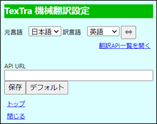
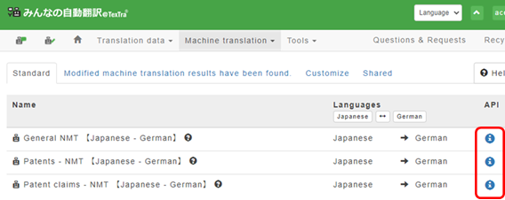
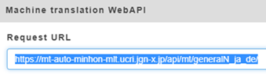
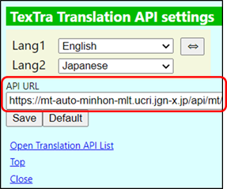

Translation API Settings
Set the Machine Translation(MT)
engine
to
perform machine
translation.
Besides the standard
MT,
you
can select an MT
system(s)
from
among specialty
MTs
and
user-customized
MTs.
The "Minna no Jido Hon'yaku" customized
MTs
can
get more advanced and
optimized
by
utilizing data input by the
users.
https://mt-auto-minhon-mlt.ucri.jgn-x.jp/content/mt/
MT API Settings
Page
Toolbar
Menu > Machine Translation API
Settings

Take the following
steps
to
obtain 'URL' of the translation API to
use.
Go
to the 'Minna no Jidou Hon'yaku' site
and
click
on 'Tool' > 'WebAPI' > 'Machine Translation' on the
menu.
https://mt-auto-minhon-mlt.ucri.jgn-x.jp/content/mt/

Click on the URL button of
the API to use
and
copy
the request
URL.

Paste the URL onto the API URL
field,
select
languages, and click on
"Save".
The
designated MT will be used starting from your next
translation.
